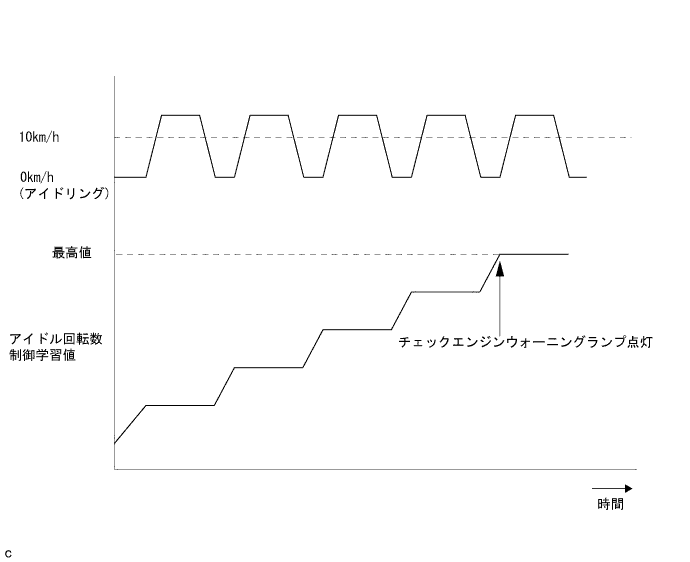

DTC P0505/33 ISCV System |

| DTC No. SAE/TCCS | P0505/33 | ||
|---|---|---|---|
| DTC Detection Condition | Diagnosis Condition | Vehicle stopped (idling) after being driven at 10 km/h or more | |
| Abnormal Condition |
| ||
| Malfunction Duration | 10 minutes | ||
| Trip Count | 2 trip | ||
| Detection Method | Detected 1 times during 1 trips (no detection after judgment) | ||
| Sensors Used for Detection | Main |
| |
| Sub |
| ||
| Inspection Area |
| ||
)| Step 1 | Read DTC |
Connect SST (TaSCAN) to DLC3.
Turn IG ON.
Turn the main switch of SST (TaSCAN) ON.
Check the DTCs by following the SST (TaSCAN) screen display.
| Result | Proceed to |
|---|---|
| Only P0505/33 is output | A |
| Codes other than P0505/33 are also output | B |
|
| ||||
| A | |
| Step 2 | Inspect PCV Hose |
Inspect the PCV hose connections and check for damage.
|
| ||||
| OK | |
| Step 3 | Inspect Intake System |
Check that there is no air leakage from any part of the intake system (disconnected vacuum hoses, air leaking from gaskets).
|
| ||||
| OK | |
| Step 4 | Replace Throttle Body Assembly (w/ Motor) |
Disconnect engine wire No.3 (battery negative terminal).
Remove the air cleaner assembly.
Remove the throttle body assembly with motor. (see)
Install a new throttle body assembly with motor. (see)
Install the air cleaner assembly.
Connect engine wire No.3 (battery negative terminal).
System Initialization
| NEXT | |
| Step 5 | Clear DTC |
Connect SST (TaSCAN) to DLC3.
Turn IG ON.
Turn the main switch of SST (TaSCAN) ON.
Following the SST (TaSCAN) screen display, clear the DTCs. (see)
| NEXT | |
| Step 6 | Check DTC |
Connect SST (TaSCAN) to DLC3.
Turn IG ON.
Start the engine and warm it up until the engine coolant temperature stabilizes.
Drive the vehicle at a speed of 10km/h or more.
Run the engine at idle for 20 seconds.
Repeat steps 5 → 6 5 times or more.
Following the SST (TaSCAN) screen display, check the DTC result.
| Result | Proceed to |
|---|---|
| DTCs are output | A |
| No DTC is output | B |
|
| ||||
| A | ||
| ||